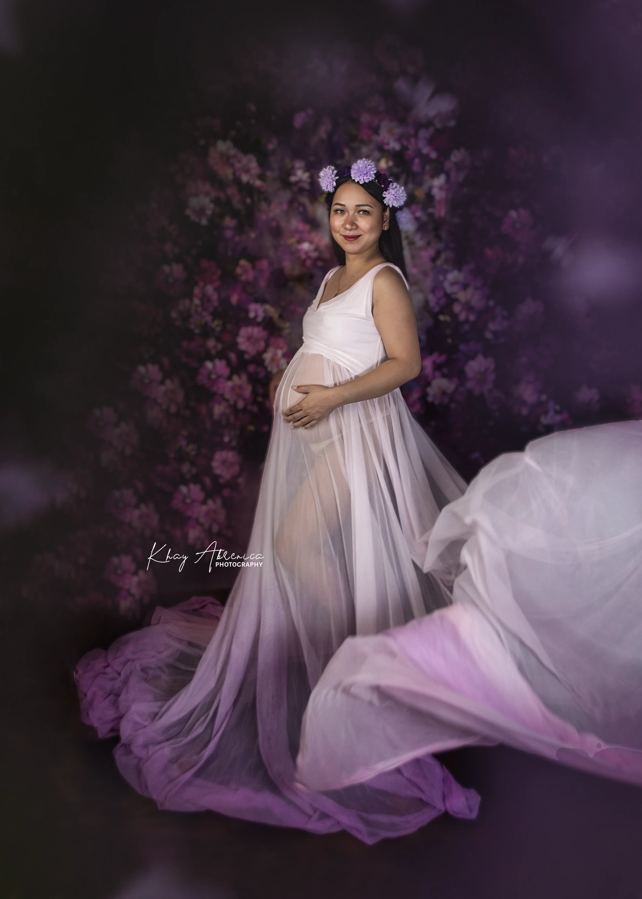
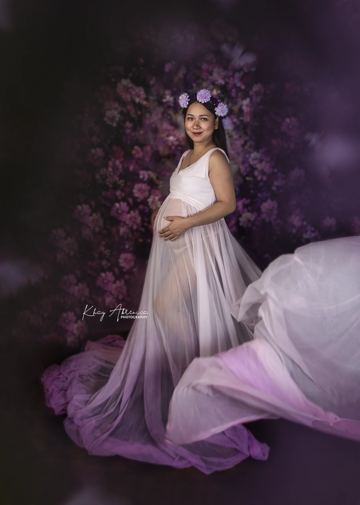

CAPTURED FOR ETERNITY
Welcome to Ikonic Studios, your premier destination for newborn photography in the Philippines. Our dedicated team specializes in capturing those fleeting moments of your newborn's early days, ensuring that they are preserved for eternity. Our skilled photographers possess the expertise to frame the innocence and tenderness of these precious moments, crafting timeless portraits filled with love. When you choose Ikonic Studios, you're choosing to cherish the magic of your baby's first moments with the top newborn photography experts in the Philippines. Every click of our camera captures a memory, ensuring that your cherished moments will hold a special place in your heart.
 
